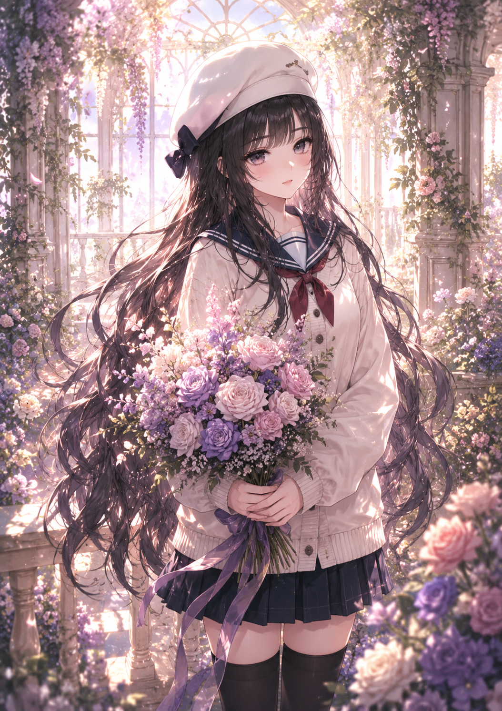

← Archive
0010
Positive Prompt
(masterpiece), (best quality), (ultra detailed), highly detailed anime illustration, beautiful elegant young woman, long flowing hair, soft eyes, gentle smile, delicate feminine face, pale porcelain skin, graceful princess-like aura, delicate embroidery, frilled sleeves, elegant waist ribbon, soft flowing fabric, sparkling earrings, bracelet accessory, refined feminine fashion, holding a bouquet of flowers, standing in a luxurious sunlit garden pavilion, blooming flowers surrounding her, elegant window arches, lush greenery, peaceful spring atmosphere, soft breeze moving hair and dress, dreamy romantic scenery, warm sunlight streaming through trees and windows, soft cinematic lighting, glowing highlights, dappled shadows, painterly anime rendering, watercolor-like shading, thin clean lineart, delicate shadow transitions, highly rendered hair details, atmospheric composition, soft pastel color palette, pixiv featured artwork, professional Japanese illustrator aesthetic, fantasy light novel cover art, premium gacha game illustration style, Korean webtoon vibe, refined painterly rendering, trending on pixiv, artstation quality, visually stunning composition
Negative Prompt
negative prompt: (low quality, blurry, bad anatomy, extra fingers, extra limbs, malformed hands, poorly drawn face, duplicated features, rough sketch, flat colors, watermark, logo, text, jpeg artifacts, realistic photo, 3d rendering)
Positive Prompt (masterpiece), (best quality), (ultra detailed), highly detailed anime illustration, beautiful elegant young woman, long flowing hair, soft eyes, gentle smile, delicate feminine face, pale porcelain skin, graceful princess-like aura, delicate embroidery, frilled sleeves, elegant waist ribbon, soft flowing fabric, sparkling earrings, bracelet accessory, refined feminine fashion, holding a bouquet of flowers, standing in a luxurious sunlit garden pavilion, blooming flowers surrounding her, elegant window arches, lush greenery, peaceful spring atmosphere, soft breeze moving hair and dress, dreamy romantic scenery, warm sunlight streaming through trees and windows, soft cinematic lighting, glowing highlights, dappled shadows, painterly anime rendering, watercolor-like shading, thin clean lineart, delicate shadow transitions, highly rendered hair details, atmospheric composition, soft pastel color palette, pixiv featured artwork, professional Japanese illustrator aesthetic, fantasy light novel cover art, premium gacha game illustration style, Korean webtoon vibe, refined painterly rendering, trending on pixiv, artstation quality, visually stunning composition Negative Prompt negative prompt: (low quality, blurry, bad anatomy, extra fingers, extra limbs, malformed hands, poorly drawn face, duplicated features, rough sketch, flat colors, watermark, logo, text, jpeg artifacts, realistic photo, 3d rendering)